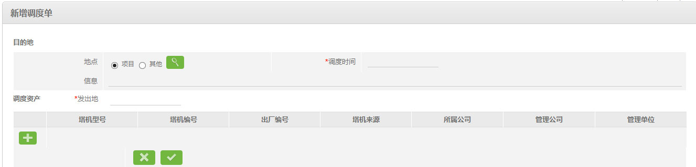
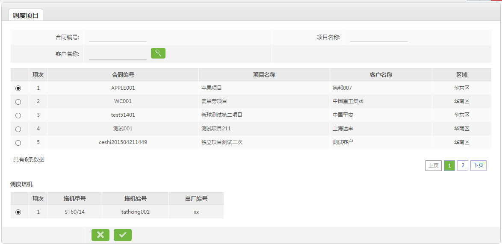
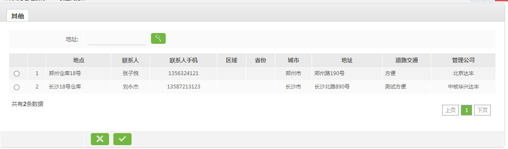
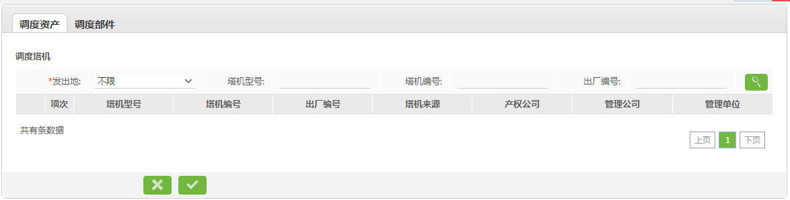
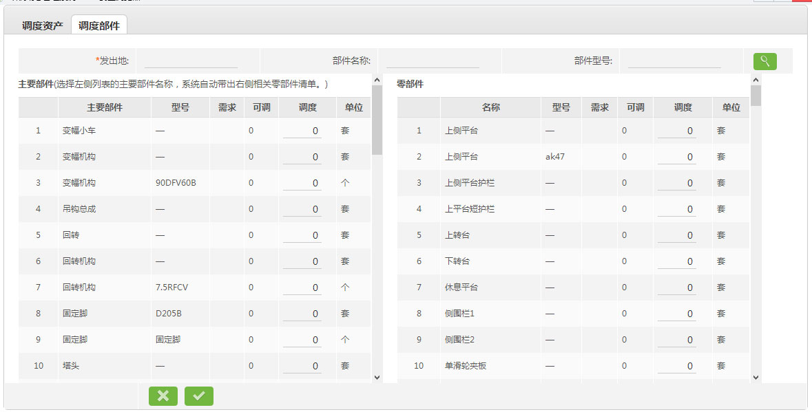

4.1.1、新增调度单

说明：
1、选择目的地，项目或其他，点击 打开调度目的地页面。
打开调度目的地页面。
2、如果是调度到项目的

2.1、查询需要调度的项目，选择该项目；
2.2、系统带出改项目所需塔机，选择需要调度的塔机型号；点击 ，保存并关闭页面。
，保存并关闭页面。
3、如果是调度到其他的

3.1、查询需要调度的地址，选择该地址；点击，保存并关闭页面。
4、点击 按钮打开调度资产页面，添加需要调度的资产；
按钮打开调度资产页面，添加需要调度的资产；
5、查询需要调度的塔机，选择改塔机

6、查询需要调度的部件，填写需要调度的部件数量
；保存并关闭页面。
7、点击，保存并返回到上一页面；点击 ，直接返回上一页，所填内容无效。
，直接返回上一页，所填内容无效。